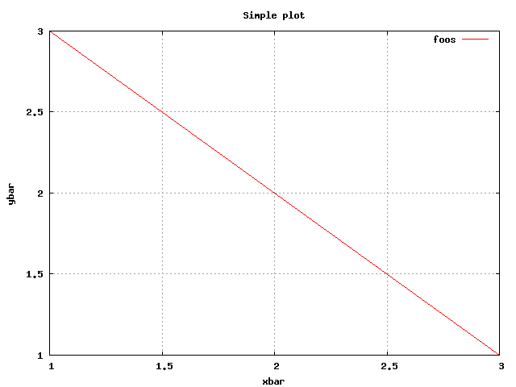
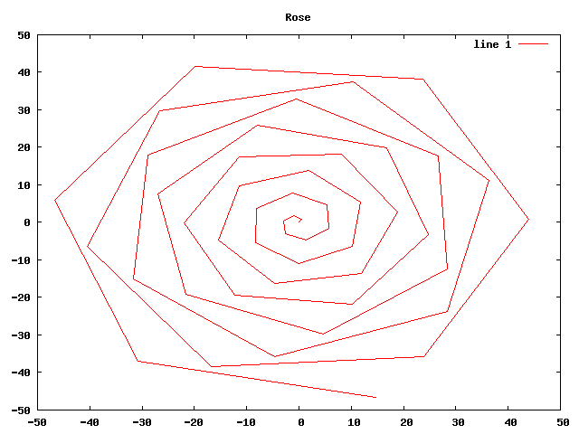
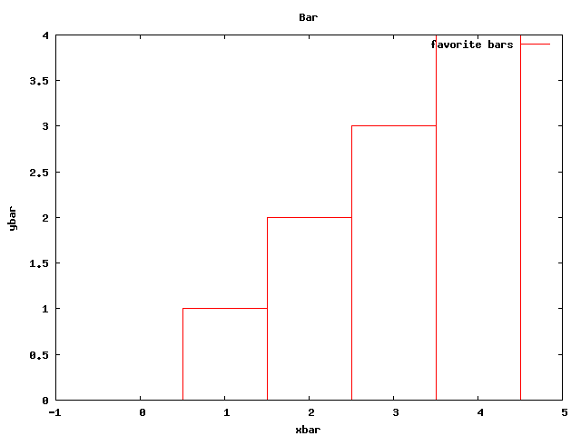
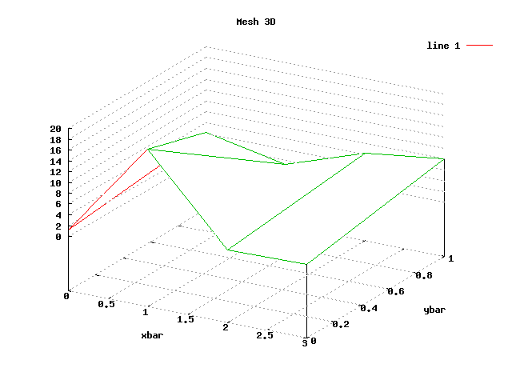

Screenshots
(go back to main page)
(octave:start)
(octave:grid "on")
(octave:plot '(1 2 3) '(3 2 1))
(octave:title "Simple plot")
(octave:xlabel "xbar")
(octave:ylabel "ybar")
(octave:legend "foos")

(octave:polar (iota 50) (iota 50))
(octave:grid "off")
(octave:title "Rose")

(octave:bar (iota 5) (iota 5))
(octave:grid "on")
(octave:title "Bar")
(octave:legend "favorite bars") ;; octave:legend works only with octave:plot and octave:bar

(octave:title "Mesh 3D")
(octave:mesh '((1.2 19.1 3.3 3.5) (4.2 1.3 6.2 8.1)))
